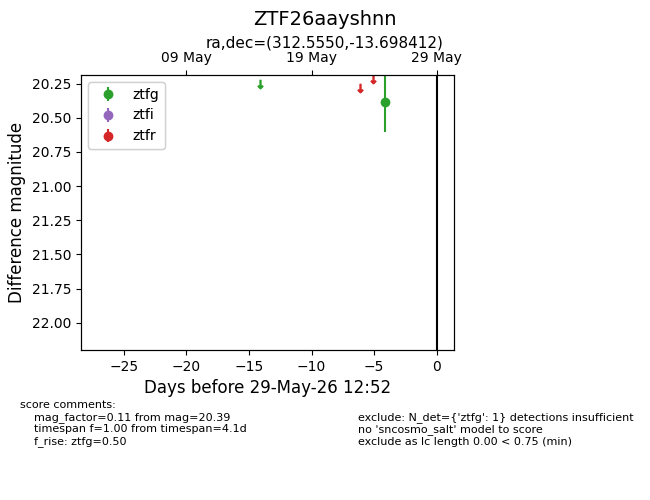
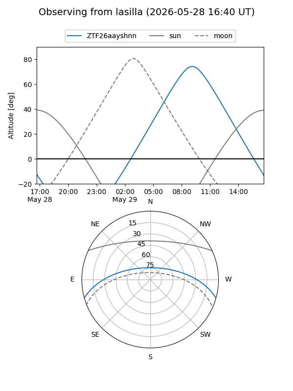
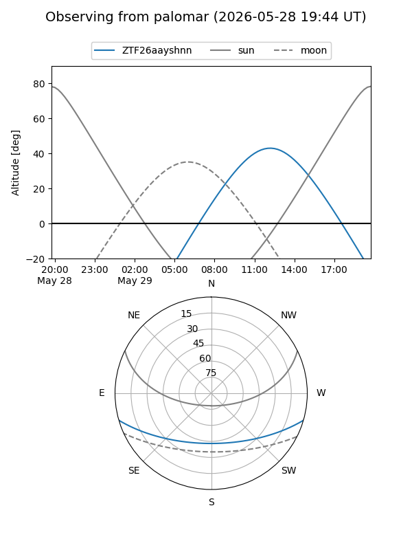

ZTF26aayshnn
Target ZTF26aayshnn at 2026-05-29 12:54
Aliases and brokers:
lsst-FINK: link
lsst-Lasair: link
lsst-ALeRCE: link
ztf-FINK: link
ztf-Lasair: link
ztf-ALeRCE: link
alt names
ZTF26aayshnn (ztf,fink_ztf)
Coordinates:
equatorial (ra, dec) = 312.5550,-13.69841
equatorial (HMS+DMS) = 20:50:13.21,-13:41:54.28
galactic (l, b) = (33.5229,-32.43440)
Flags:
Photometry:
last ztfg=20.39
1 ztfg detections
Lightcurve

Visibility


Additional plots